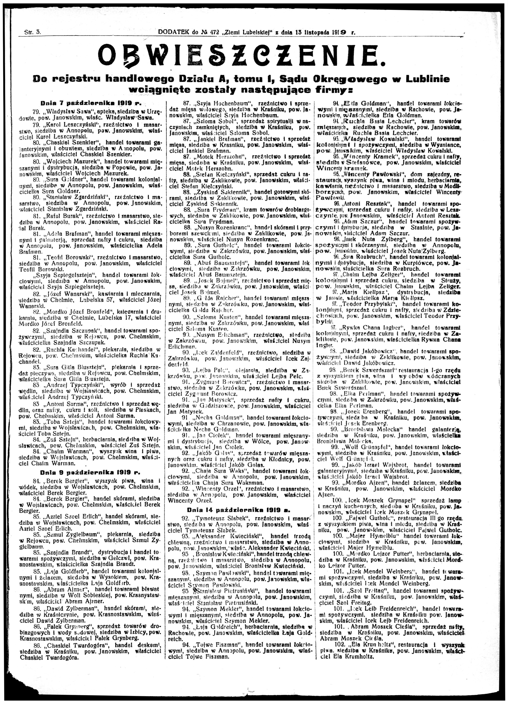
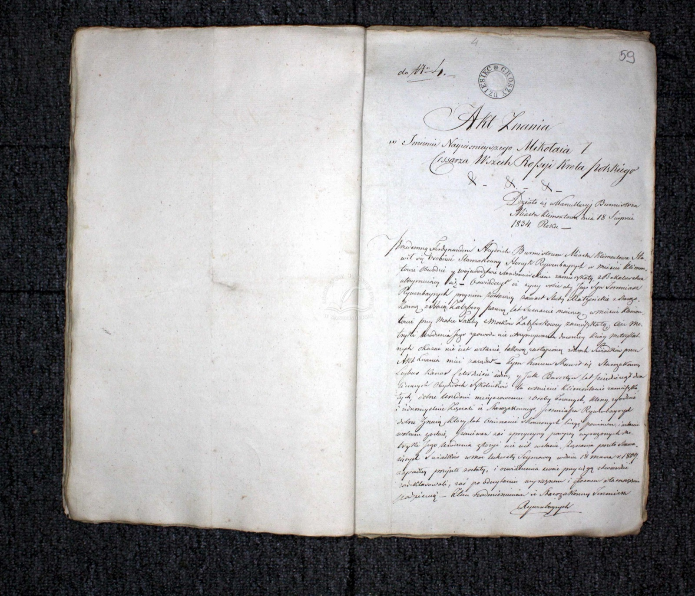
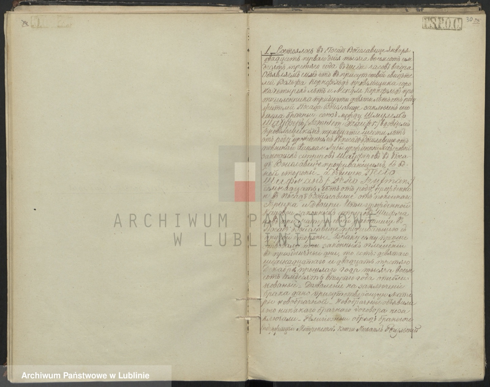
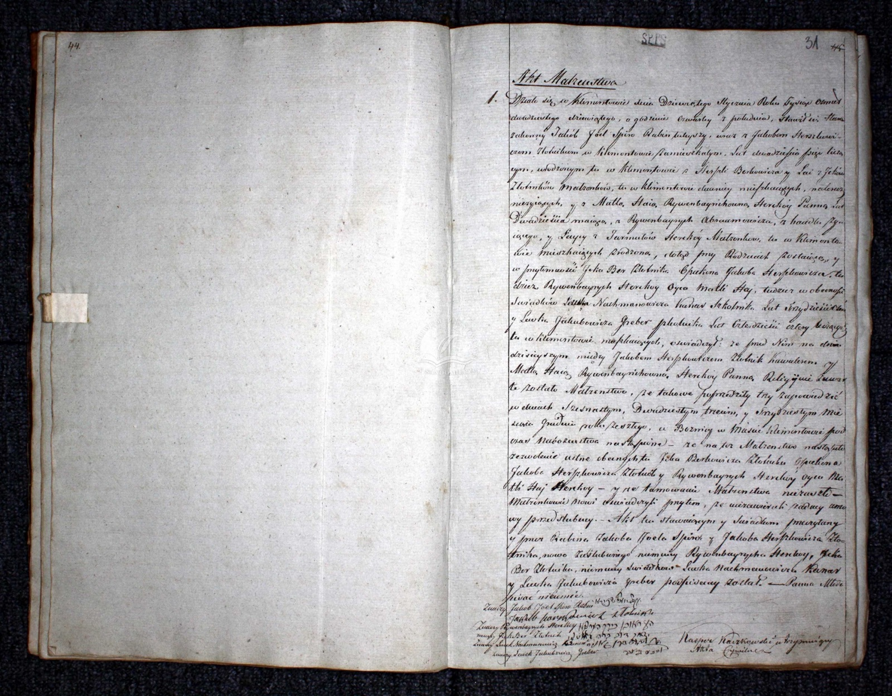

תולדות משפחה · 1760–2026
שני נתיבים אל אותה נקודה: מוויסלביצה שבמחוז לובלין ומוורשה־אופטוב, דרך גליציה, ווהלין ודורוהוסק שעל נהר הבוג — עד ישראל. כל טענה כאן מגובה במסמך, ומדורגת לפי מידת הוודאות שלה.




מוויסלביצה שבמחוז חלם, דרך שוייז'ה ודורוהוסק שעל נהר הבוג, וגם מראווה רוסקה שבגליציה האוסטרית. חנות משפחתית, בית בירה, וזיכרונות שנכתבו בעצם ידו של מנחם מנדל שאפיר.
וויסלביצה · חלם · שוייז'ה · דורוהוסק · ראווה רוסקה · בלז
← צד אבאמרובע היהודים של ורשה ועד אופטוב החסידית, דרך פיונטק ואיווניסקה. סיפור שנבנה מאקט נישואין אחד שנקרא במלואו.
ורשה · אופטוב · איווניסקה · קלימונטוב · פיונטק · לודז'
←כרטיסים לבנים חדים עם צל-בלוק גרפי ופס ענף רחב — כתום-חלודה לצד אמא, סגול לצד אבא. מיקוד בכחול קובלט. קווי חיבור שחורים דקים.
ענף מוסקל–אלספקטור–רייס (עד לייבה מוסקל, יליד ~1817) נוסף לעץ ולג'ני, מ"מסמכי 2019"
אקט פטירה 6/1833: אהרן ופרלה בוקשפן מדורוהוסק — האבות הקדומים ביותר במחקר
אקט פטירה 4/1869: הקשר בין שוייז'ה לוויסלביצה, ומשפחת שיפמן–קץ